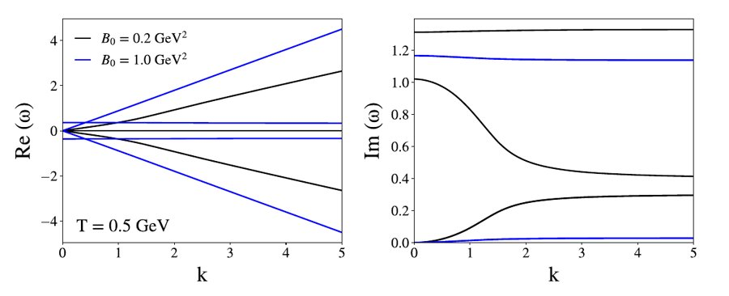
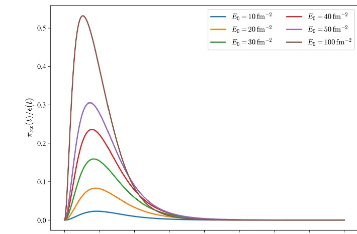

Magnetic fields make the early gluon plasma anisotropic
With A. Mizher, G. Denicol and A. Ayala, we use effective kinetic theory to show how a strong magnetic field induces anisotropic gluon pressure during pre-equilibrium in heavy-ion collisions.
Theoretical Nuclear Physicist
PhD, Universidade Federal Fluminense (UFF), Brazil
I am a theoretical nuclear physicist working on how hot, dense, strongly magnetized matter flows. I did my PhD at the Universidade Federal Fluminense in Brazil with Gabriel S. Denicol, deriving relativistic dissipative and resistive magnetohydrodynamics directly from the Boltzmann equation for multi-component plasmas.
The same equations describe two very different systems: the quark–gluon plasma created in heavy-ion collisions at RHIC and the LHC, where magnetic fields reach 1018 Gauss, and magnetized accretion flows around compact objects. I care about getting the theory right — causal, stable and well-posed — and then using it in simulations.
Recently I have been a visiting researcher at Lawrence Berkeley National Laboratory and RIKEN iTHEMS (2026) and at the University of Illinois Urbana-Champaign (2024, 2026).
With A. Mizher, G. Denicol and A. Ayala, we use effective kinetic theory to show how a strong magnetic field induces anisotropic gluon pressure during pre-equilibrium in heavy-ion collisions.
Working on the MC-EKRT model with Y. Kanakubo and L. Du, and on a framework for the chiral magnetic effect with V. Koch. Invited talk at the LBNL Heavy-Ion Theory seminar.
Presented “Momentum anisotropy from resistive magnetohydrodynamics”, now published in the Journal of Subatomic Particles and Cosmology.

Ohm’s law is not instantaneous. We derive how charge currents relax in an electron–ion plasma and find damped oscillations when collisions are weak.

Do perturbations ever travel faster than light, or grow without bound? Linear analysis shows the theory stays causal and stable, and how strong fields reshape its modes.

Starting from kinetic theory, we obtain the equations of motion for shear stress in a magnetized two-component gas and show how the field splits it into distinct components.

An electric field alone, with no flow gradients, can push the plasma out of isotropy. The effect grows with field strength and fades as the charge current depletes the field.
An effective kinetic description of how the initial magnetic field biases gluon pressure before hydrodynamics takes over.
Taking the two-component theory to astrophysical plasmas: what resistive, dissipative transport means for magnetized accretion flows. EPJ featured talk at Quark Matter 2025.
Full list on INSPIRE-HEP.
Monte Carlo EKRT model with Y. Kanakubo and L. Du; chiral magnetic effect framework with V. Koch.
Extending ICCING to include electromagnetic fields (with J. Noronha-Hostler); nonlinear causality of two-component plasmas (with J. Noronha).
Transient equations for shear stress and charge diffusion of multi-component plasmas in EM fields, with causality and stability analysis.
Nonlinear causality constraints on transport coefficients, stresses and fields in massless dissipative MHD (with J. Noronha).
Open to postdoctoral positions and collaborations in nuclear theory, relativistic plasmas and computational physics.
khwahishkushwah3@gmail.com